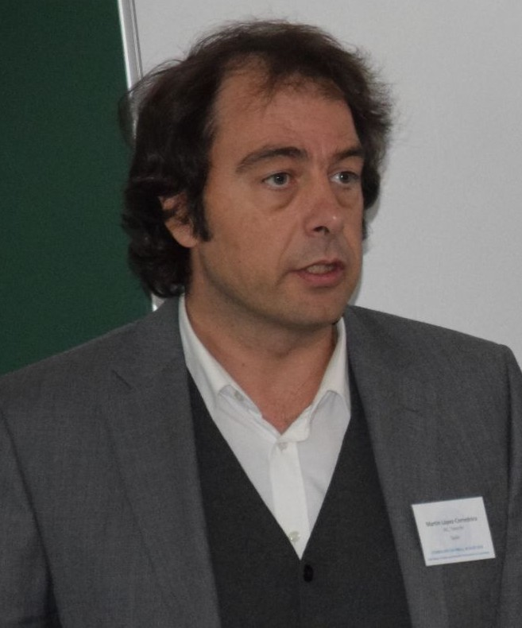
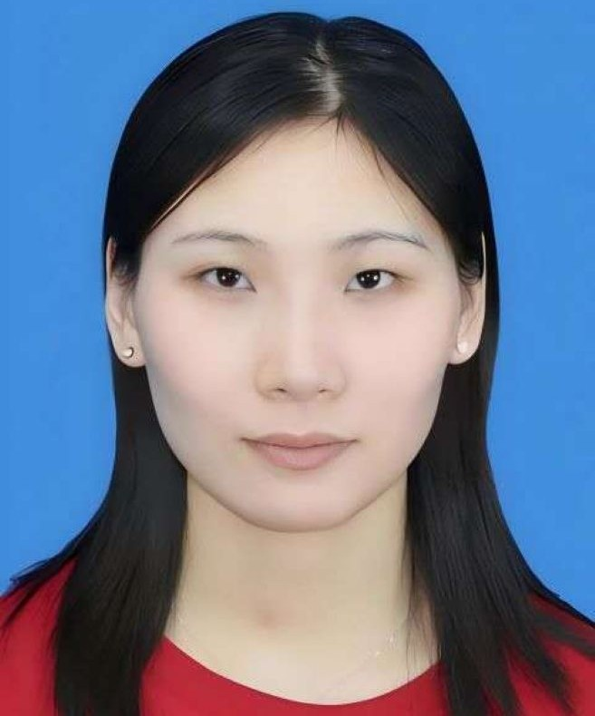

Hai-Feng Wang
Affiliation: Department of Astronomy, China West Normal University (Research Staff; Group Leader of Local Universe and Time-Domain Astronomy Laboratory)
Research Topics: Milky Way and the Local Universe, with particular emphasis on galactic seismology, dynamics, archaeology, interstellar matter, disk systems, galaxy mergers, collisions and the nature of dark matter, using data analysis, modeling, and simulations.

Martín López Corredoira
Affiliation: Instituto de Astrofísica de Canarias, Canary Islands, Spain (Staff Researcher)
Research Topics: Milky Way and cosmology.

Guan-Yu Wang
Affiliation: Dipartimento di Fisica e Astronomia ``Galileo Galilei", University of Podova (Ph.D. student)
Research Topics: Milky Way halo structure; Stellar streams & substructures; Galactic assembly history; Dynamical evolution.

Qi-Da Li
Affiliation: China West Normal University (Assistant Professor)
Research Topics: Parameter measurement for large sample stars, the stellar initial mass function.

Xiao-Peng Liu
Affiliation: Hebei Normal University (Ph.D. student)
Research Topics: Milky Way disk structure and kinematics; thin-disk density distribution and vertical asymmetries; outer-disk rotation curve based on LAMOST stellar tracers.

Peng Yang
Affiliation: China West Normal University (Ph.D. student)
Research Topics: Galactic seismology, dynamics, and disk structure analysis.

Yu-Zheng Wang
Affiliation: Hebei Normal University (Master’s student)
Research Topics: Structure and dynamics of the outer disk.

Guo-Jun Cheng
Affiliation: China West Normal University (Master’s student)
Research Topics: Milky Way bulge populations and dynamics.

Pei-Bin Chen
Affiliation: China West Normal University (Assistant Professor)
Research Topics: Dwarf galaxy, AGN, Star Formation.
Xiang Luo
Affiliation: China West Normal University (Assistant Professor)
Research Topics: Planetary atmosphere, Stellar activity, Time domain stellar physics.
Yan Jiang
Affiliation: China West Normal University (Assistant Professor)
Research Topics: Disk Galaixies, Star formation, Radio astronomy.
Min Dai
Affiliation: China West Normal University (Assistant Professor)
Research Topics: Red SuperGiants, Stellar catalog, M31 dynamics.
Shi-Ji Zhou
Affiliation: China West Normal University (Assistant Professor)
Research Topics: Pulsars, Milky Way disk.
Xiao-Yue Zhou
Affiliation: National Astronomical Observatory of Chinese Academy of Sciences (Ph.D. student)
Research Topics: Disk Warps and Stellar Catalogs.

Gui-Mei Liu
Affiliation: Xinjiang Astronomical Observatory & University of Vienna (Ph.D. student)
Research Topics: Star Clusters and dynamics.
Yong-Jun Jiao
Affiliation: Tsinghua University (Postdoctoral Researcher)
Research Topics: Rotation Curves, Dark matter, Galaxy formation, FAST datasets.
Yang-Jun Shi
Affiliation: China West Normal University (Ph.D. student)
Research Topics: Near-Field Cosmology; Cosmology; Dark Matter.
Chang-Ping Li
Affiliation: China West Normal University (Master’s student)
Research Topics: Streams; Chemo-Dynamics of the Milky Way Halo; Dark Matter.